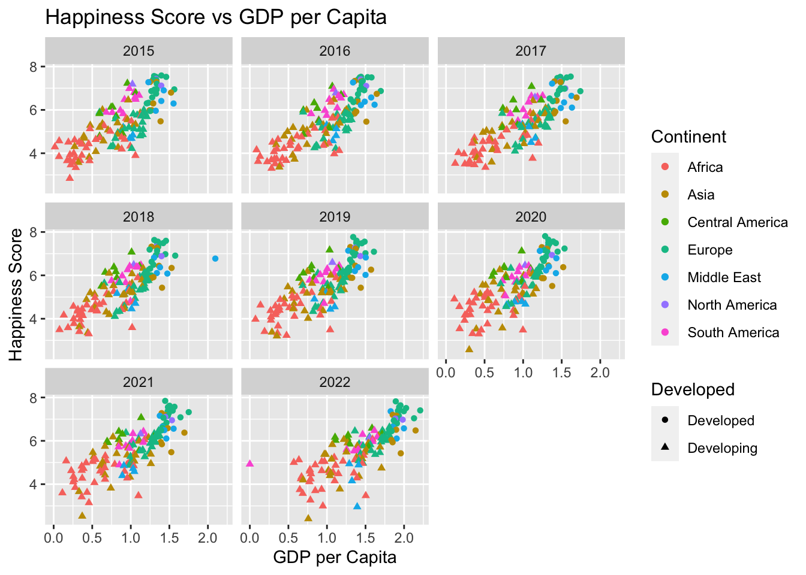
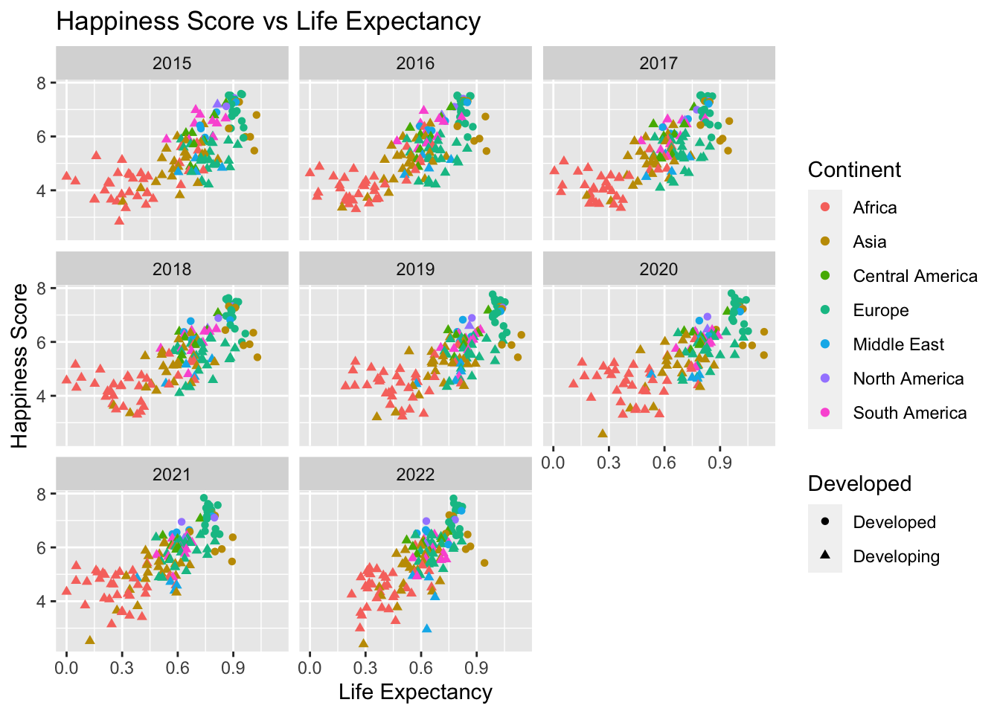
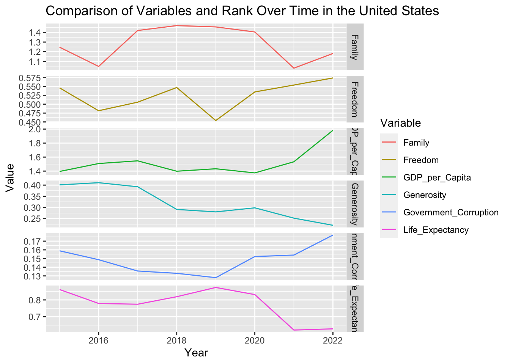
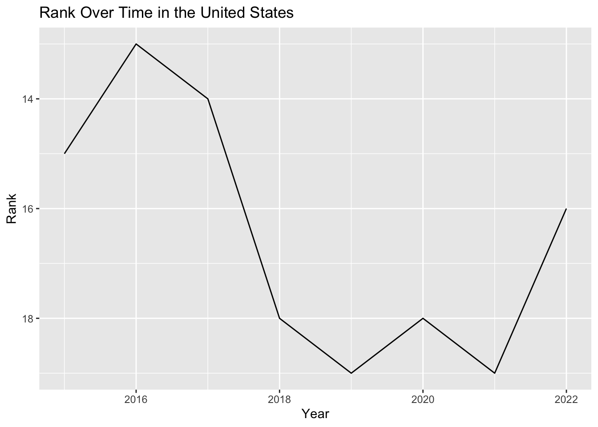

Code
library(tidyverse)
library(readr)
library(broom)
knitr::opts_chunk$set(echo = TRUE, warning=FALSE, message=FALSE)library(tidyverse)
library(readr)
library(broom)
knitr::opts_chunk$set(echo = TRUE, warning=FALSE, message=FALSE)Happiness, a deeply personal and subjective experience, is often defined as a state of well-being and contentment, characterized by the presence of positive emotions and the absence of negative ones. The measurement of happiness is a complex task due to its highly subjective nature, necessitating an interdisciplinary approach. The World Happiness Report, an annual survey that assesses happiness levels across 153 countries globally, is a prime example of this approach.
Psychology contributes to our understanding of happiness, particularly in the use of the World Happiness Report’s data, by exploring emotions, cognitions, and behaviors. It emphasizes factors such as social support and freedom to make life choices, both key elements examined in the report. Similarly, behavioral economics, which explores how individual decision-making impacts happiness, is reflected in the report’s inclusion of GDP per capita and perceptions of corruption as potential influences on happiness.
Sociology and political science provide broader perspectives on how societal structures and governance impact happiness, offering context to the varying happiness levels between countries. Moreover, insights from neuroscience help us comprehend the physiological basis of happiness, illuminating why certain factors in the report, such as generosity or a healthy life expectancy, might elicit positive emotional responses.
The World Happiness Report, in its extensive data collection and analysis, embodies the interdisciplinary approach to defining and measuring happiness. It draws from various academic disciplines, such as psychology, behavioral economics, sociology, political science, and neuroscience, providing a comprehensive understanding of happiness on a global scale. By analyzing factors like GDP per capita, social support, freedom to make life choices, generosity, perceptions of corruption, and more, the report offers a robust tool for exploring the multi-faceted nature of happiness.
This dataset is from the World Happiness Report up to 2022 on the Kaggle platform https://www.kaggle.com/datasets/mathurinache/world-happiness-report
The World Happiness Report is an annual survey that evaluates the sense of happiness in 153 countries globally. The dataset of this report typically includes the happiness score of each country, along with various factors used to explain that score. These factors include: GDP per capita, healthy life expectancy, social support, freedom to make life choices, generosity, and perceptions of corruption. In addition, there is an indicator named “dystopia residual” that is used to compare the worst possible life in every aspect.
The report uses data from the Gallup World Poll to calculate happiness ratings and rankings. Based on responses to the survey, the results are calculated. One tool used is the Cantril ladder, a questionnaire that asks respondents to rank their current lives on a scale from 0 to 10, with 10 representing the best possible life they can imagine and 0 representing the worst possible existence. The responses from citizens are then averaged to obtain the happiness score for the country. Countries around the world are ranked in descending order of happiness. The World Happiness Report uses several key measures to evaluate the sense of happiness in each country:
GDP per Capital: This is the measure of a country’s economic output that accounts for its number of people. It serves as an indicator of the standard of living and economic prosperity. A higher GDP usually signifies better living conditions and opportunities, contributing to the happiness of the citizens.
Healthy Life Expectancy: This measure indicates the average lifespan of people in a country in a physically and mentally healthy state. It reflects people’s health status and their expectations of longevity, which significantly impact their sense of happiness.
Social Support: This factor represents whether individuals feel they have someone to rely on during tough times. It could include friends, family, or community members. Strong social support networks contribute positively to individuals’ sense of happiness.
Freedom to Make Life Choices: This factor evaluates the extent to which individuals feel they have the liberty to make key life decisions. The ability to choose how to live one’s life freely is essential to the overall sense of satisfaction and happiness.
Generosity: This measure determines the extent to which people in a country are willing to help others. Acts of generosity can enhance an individual’s sense of happiness and contribute to stronger community ties.
Perceptions of Corruption: This measure examines how corrupt individuals perceive their government and private sector to be. High levels of perceived corruption can lead to lower trust in societal systems, negatively impacting the happiness of citizens.
Dystopia Residual: This is a hypothetical measure that represents the worst possible living conditions. It’s used as a benchmark to compare the actual living conditions in each country. It’s essentially the ‘unexplained’ component of happiness, encapsulating any aspects of happiness not covered by the other six factors.
# Define the years you want to read in
years <- 2015:2022
# Loop over the years
for (year in years) {
# Define the path to the csv file
file_path <- paste0("_data/Happiness_Zhongyue_Lin/", year, ".csv")
# Read the csv file
df <- readr::read_csv(file_path)
# Add the year to the data frame
df <- dplyr::mutate(df, Year = year)
# Define the variable name
var_name <- paste0("Happy_", year)
# Assign the data frame to the variable name in the global environment
assign(var_name, df, envir = .GlobalEnv)
# Print the head and structure of the data frame
print(head(df))
}The logic of this code is to read happiness index datasets from 2015 to 2022 and assign each dataset to a corresponding variable name based on the year. First, a vector is defined to include the years from 2015 to 2022. Then, through a loop, the code constructs the file path for each dataset and uses the read_csv() function to read the dataset, storing it in a variable named df.
Next, the code uses the mutate() function to add a new column named “Year” to the dataset, with the value set to the current year in the loop. The code also constructs a variable name based on the current year and uses the assign() function to assign the dataset to that variable name in the global environment.
Finally, the code prints the first few rows of each dataset to examine the data’s contents.
Through this loop, the code reads each dataset for each year, adds a new column for the year, and assigns the dataset to the corresponding variable name in the global environment. This allows each dataset for each year to be accessible and the first few rows can be printed to review the dataset’s contents.
# Calculate rank for Happy_2020
Happy_2020 <- Happy_2020 %>%
mutate(Rank = rank(desc(`Ladder score`)))
# Calculate rank for Happy_2021
Happy_2021 <- Happy_2021 %>%
mutate(Rank = rank(desc(`Ladder score`)))# Create a function to rename rank column
rename_rank_column <- function(df, old_name) {
df %>%
rename(Rank = old_name)
}
# Apply this function to all dataframes
Happy_2015 <- rename_rank_column(Happy_2015, 'Happiness Rank')
Happy_2016 <- rename_rank_column(Happy_2016, 'Happiness Rank')
Happy_2017 <- rename_rank_column(Happy_2017, 'Happiness.Rank')
Happy_2018 <- rename_rank_column(Happy_2018, 'Overall rank')
Happy_2019 <- rename_rank_column(Happy_2019, 'Overall rank')
Happy_2020 <- rename_rank_column(Happy_2020, 'Rank')
Happy_2021 <- rename_rank_column(Happy_2021, 'Rank')
Happy_2022 <- rename_rank_column(Happy_2022, 'RANK')# Create a function to rename country column
rename_country_column <- function(df, old_name) {
df %>%
rename(Country = old_name)
}
# Apply this function to all dataframes
Happy_2015 <- rename_country_column(Happy_2015, 'Country')
Happy_2016 <- rename_country_column(Happy_2016, 'Country')
Happy_2017 <- rename_country_column(Happy_2017, 'Country')
Happy_2018 <- rename_country_column(Happy_2018, 'Country or region')
Happy_2019 <- rename_country_column(Happy_2019, 'Country or region')
Happy_2020 <- rename_country_column(Happy_2020, 'Country name')
Happy_2021 <- rename_country_column(Happy_2021, 'Country name')
Happy_2022 <- rename_country_column(Happy_2022, 'Country')# Create a function to rename score column
rename_score_column <- function(df, old_name) {
df %>%
rename(Score = old_name)
}
# Apply this function to all dataframes
Happy_2015 <- rename_score_column(Happy_2015, 'Happiness Score')
Happy_2016 <- rename_score_column(Happy_2016, 'Happiness Score')
Happy_2017 <- rename_score_column(Happy_2017, 'Happiness.Score')
Happy_2020 <- rename_score_column(Happy_2020, 'Ladder score')
Happy_2021 <- rename_score_column(Happy_2021, 'Ladder score')
Happy_2022 <- rename_score_column(Happy_2022, 'Happiness score')Happy_2022 <- Happy_2022 %>%
mutate(across(c('Dystopia (1.83) + residual',
'Explained by: GDP per capita',
'Explained by: Healthy life expectancy',
'Explained by: Freedom to make life choices','Explained by: Social support',
'Explained by: Generosity',
'Explained by: Perceptions of corruption'), ~ as.numeric(gsub(",", ".", .))),
across(-Country, as.numeric))
Happy_2022 <- Happy_2022 %>%
mutate(across(c("Score", "Whisker-high", "Whisker-low"), ~ . / 1000))# Create a function to rename multiple columns
rename_columns <- function(df, old_names, new_names) {
df %>%
rename_at(vars(old_names), ~ new_names)
}
# Define new names
new_names <- c("GDP_per_Capita", "Family", "Life_Expectancy", "Freedom",
"Generosity", "Government_Corruption", "Dystopia_Residual")
# Apply this function to all dataframes
Happy_2015 <- rename_columns(Happy_2015,
c("Economy (GDP per Capita)", "Family", "Health (Life Expectancy)",
"Freedom", "Generosity", "Trust (Government Corruption)", "Dystopia Residual"),
new_names)
Happy_2016 <- rename_columns(Happy_2016,
c("Economy (GDP per Capita)", "Family", "Health (Life Expectancy)",
"Freedom", "Generosity", "Trust (Government Corruption)", "Dystopia Residual"),
new_names)
Happy_2017 <- rename_columns(Happy_2017,
c("Economy..GDP.per.Capita.", "Family", "Health..Life.Expectancy.",
"Freedom", "Generosity", "Trust..Government.Corruption.", "Dystopia.Residual"),
new_names)
Happy_2018 <- rename_columns(Happy_2018,
c("GDP per capita", "Social support", "Healthy life expectancy",
"Freedom to make life choices", "Generosity", "Perceptions of corruption"),
new_names[-length(new_names)])
Happy_2019 <- rename_columns(Happy_2019,
c("GDP per capita", "Social support", "Healthy life expectancy",
"Freedom to make life choices", "Generosity", "Perceptions of corruption"),
new_names[-length(new_names)])old_names_2020_to_2021 <- c("Explained by: Log GDP per capita",
"Explained by: Social support",
"Explained by: Healthy life expectancy",
"Explained by: Freedom to make life choices",
"Explained by: Generosity",
"Explained by: Perceptions of corruption",
"Dystopia + residual")
old_names_2022 <- c("Explained by: GDP per capita",
"Explained by: Social support",
"Explained by: Healthy life expectancy",
"Explained by: Freedom to make life choices",
"Explained by: Generosity",
"Explained by: Perceptions of corruption",
"Dystopia (1.83) + residual")
# Define a function to drop a column if it exists
drop_column_if_exists <- function(df, column_name) {
if (column_name %in% colnames(df)) {
df <- df %>% select(-column_name)
}
return(df)
}
# Drop original 'Generosity' column if it exists in Happy_2020 and Happy_2021 datasets
Happy_2020 <- drop_column_if_exists(Happy_2020, 'Generosity')
Happy_2021 <- drop_column_if_exists(Happy_2021, 'Generosity')
# Then proceed with the renaming process
Happy_2020 <- rename_columns(Happy_2020, old_names_2020_to_2021, new_names)
Happy_2021 <- rename_columns(Happy_2021, old_names_2020_to_2021, new_names)
Happy_2022 <- rename_columns(Happy_2022, old_names_2022, new_names)# Create a list of datasets
datasets <- list(Happy_2015, Happy_2016, Happy_2017, Happy_2018, Happy_2019, Happy_2020, Happy_2021, Happy_2022)
# Apply glimpse() function to each dataset in the list
lapply(datasets, head)In the data cleaning stage, I standardized the format of the datasets from 2015 to 2022. This was done to eliminate differences between the datasets and ensure consistent structure and variable names. This process has several benefits for subsequent data analysis.
By standardizing the format of the datasets, I ensured that the data had consistent structure and variable names across different years. This makes the data easier to understand and compare, reducing confusion and errors that can arise from varying naming conventions and structures.
Additionally, standardizing the format enhances reproducibility. Once the cleaning and renaming rules are defined, future datasets can be processed using the same rules, eliminating the need for repetitive work. This improves efficiency and reduces the likelihood of errors.
Using consistent variable names improves readability. Descriptive and clear variable names make it easier for others to understand the content of the dataset and facilitate my own analysis and reporting in subsequent stages.
Standardizing the format also benefits data analysis. Consistent data formats make it easier to aggregate, filter, visualize, and model the data across multiple years without the need for different processing steps for each dataset. This provides a more efficient and streamlined data analysis process.
In conclusion, by standardizing the format of the datasets from 2015 to 2022, I ensured consistency, reproducibility, and readability of the data, while improving the efficiency and accuracy of data analysis. This establishes a solid foundation for subsequent data exploration, analysis, and interpretation.
Happy_2015 <- Happy_2015 %>% mutate(Government_Corruption = as.numeric(Government_Corruption))
Happy_2016 <- Happy_2016 %>% mutate(Government_Corruption = as.numeric(Government_Corruption))
Happy_2017 <- Happy_2017 %>% mutate(Government_Corruption = as.numeric(Government_Corruption))
Happy_2018 <- Happy_2018 %>% mutate(Government_Corruption = as.numeric(Government_Corruption))
Happy_2019 <- Happy_2019 %>% mutate(Government_Corruption = as.numeric(Government_Corruption))
Happy_2020 <- Happy_2020 %>% mutate(Government_Corruption = as.numeric(Government_Corruption))
Happy_2021 <- Happy_2021 %>% mutate(Government_Corruption = as.numeric(Government_Corruption))
Happy_2022 <- Happy_2022 %>% mutate(Government_Corruption = as.numeric(Government_Corruption))needed_columns <- c("Country", "Year", "Score", "Rank", "GDP_per_Capita", "Family",
"Life_Expectancy", "Freedom", "Generosity", "Government_Corruption"
)
# Create a function to select a specific column
select_columns <- function(df, columns) {
df %>% select(all_of(columns))
}
Happy_2015_selected <- select_columns(Happy_2015, needed_columns)
Happy_2016_selected <- select_columns(Happy_2016, needed_columns)
Happy_2017_selected <- select_columns(Happy_2017, needed_columns)
Happy_2018_selected <- select_columns(Happy_2018, needed_columns)
Happy_2019_selected <- select_columns(Happy_2019, needed_columns)
Happy_2020_selected <- select_columns(Happy_2020, needed_columns)
Happy_2021_selected <- select_columns(Happy_2021, needed_columns)
Happy_2022_selected <- select_columns(Happy_2022, needed_columns)
# Finally, combine all the selected data boxes together
all_years_selected <- bind_rows(Happy_2015_selected, Happy_2016_selected, Happy_2017_selected,
Happy_2018_selected, Happy_2019_selected, Happy_2020_selected,
Happy_2021_selected, Happy_2022_selected)
all_years_selected <- all_years_selected %>%
mutate(Rank = as.integer(Rank))
# Remove * from Country names
all_years_selected$Country <- gsub("\\*", "", all_years_selected$Country)
# Replace 'Trinidad & Tobago' with 'Trinidad and Tobago'
all_years_selected$Country <- gsub("Trinidad & Tobago", "Trinidad and Tobago", all_years_selected$Country)
# Replace 'Taiwan Province of China' with 'Taiwan'
all_years_selected$Country <- gsub("Taiwan Province of China", "Taiwan", all_years_selected$Country)
# Replace 'Hong Kong S.A.R. of China' and 'Hong Kong S.A.R., China' with 'Hong Kong'
all_years_selected$Country <- gsub("Hong Kong S.A.R. of China", "Hong Kong", all_years_selected$Country)
all_years_selected$Country <- gsub("Hong Kong S.A.R., China", "Hong Kong", all_years_selected$Country)
head(all_years_selected)# Filter for Japan
japan_data <- all_years_selected %>%
filter(Country == "Japan")
# Plot rank over time
library(ggplot2)
ggplot(japan_data, aes(x = Year, y = Rank)) +
geom_line() +
geom_point() +
theme_minimal() +
ggtitle("Ranking of Japan from 2015 to 2022") +
xlab("Year") +
ylab("Rank") +
scale_y_reverse() # Reverse the y axis as rank 1 is the highest
The World Happiness Report’s dataset offers a wealth of information that can help address numerous research questions related to national happiness levels and the factors that influence them. Here’s a more detailed look at the potential research questions mentioned:
Which factors most significantly influence a country’s happiness? This question seeks to determine the primary drivers of happiness on a national scale. Are economic factors like GDP per capita more influential, or do social factors such as social support and freedom to make life choices hold more weight? Additionally, to what extent does a nation’s perception of corruption impact the overall happiness? Analyzing correlations and conducting regression analysis could shed light on these relationships.
How does happiness differ among countries? This question explores the disparities in happiness levels across various nations. Which countries consistently rank at the top, and which ones at the bottom? Are there discernible patterns geographically, economically, or culturally? Comparing and analyzing the happiness scores and their respective factors across different countries can provide insights.
How do various factors and overall happiness evolve over time? This question addresses the temporal dynamics of happiness and its influencing factors. Are there trends showing that certain factors become more or less influential over time? Does the overall happiness level of countries or the world at large rise, fall, or remain stable? Time series analysis could be useful in this context.
How does a specific factor impact happiness? This question focuses on the relationship between a single factor and happiness. For instance, how does a rise in GDP per capita or a decrease in perceived corruption affect the happiness score? Understanding this can help pinpoint what initiatives might be most effective in increasing a country’s happiness. Conducting detailed analysis for individual factors and their impact on the happiness score would be required to address this question.
By meticulously examining these questions using the dataset, researchers can gain valuable insights into the complex dynamics of happiness, potentially guiding policy decisions and initiatives aimed at enhancing national well-being.
In Homework 2, I carried out several critical tasks related to data preparation, analysis, and visualization. Here’s a summary:
Data Cleaning: Firstly, I standardized multiple datasets spanning from 2015 to 2022. This process involved converting the Government_Corruption variable into a numeric format for all the years. This step ensured that the data across all years was consistent and comparable.
Data Integration: After cleaning the data, I selected a specific set of columns from all the datasets that I deemed necessary for my analysis. This included variables such as “Country”, “Year”, “Score”, “Rank”, “GDP_per_Capita”, “Family”, “Life_Expectancy”, “Freedom”, “Generosity”, and “Government_Corruption”. I then amalgamated all these selected data subsets from the different years into one unified dataset for further analysis.
Data Visualization: I then conducted a preliminary visualization using ggplot2 to test the dataset. In this step, I filtered the data for Japan and graphed its ranking over time from 2015 to 2022.
Research Questions: I proposed several research questions concerning national happiness levels and their influencing factors. These questions aimed to explore which factors most significantly influence a country’s happiness, how happiness varies among countries, how various factors and overall happiness evolve over time, and how a specific factor impacts happiness.
By accomplishing these tasks, I prepared the dataset for an in-depth exploratory data analysis in Homework 3. The integrated and clean dataset, along with the established research questions, provides a solid foundation for further analysis and interpretation.
# Function to compute descriptive statistics
compute_descriptive_stats <- function(data, var_name) {
var <- enquo(var_name) # turn the variable name into a symbol
stats <- data %>% summarise(
mean = mean(!!var, na.rm = TRUE),
median = median(!!var, na.rm = TRUE),
sd = sd(!!var, na.rm = TRUE),
min = min(!!var, na.rm = TRUE),
max = max(!!var, na.rm = TRUE)
)
return(stats)
}
# Use the function for the variables
score_stats <- compute_descriptive_stats(all_years_selected, Score)
gdp_stats <- compute_descriptive_stats(all_years_selected, GDP_per_Capita)
family_stats <- compute_descriptive_stats(all_years_selected, Family)
life_expectancy_stats <- compute_descriptive_stats(all_years_selected, Life_Expectancy)
freedom_stats <- compute_descriptive_stats(all_years_selected, Freedom)
generosity_stats <- compute_descriptive_stats(all_years_selected, Generosity)
gov_corruption_stats <- compute_descriptive_stats(all_years_selected, Government_Corruption)
# Print the results
head(score_stats)head(gdp_stats)head(family_stats)head(life_expectancy_stats)head(freedom_stats)head(generosity_stats)head(gov_corruption_stats)In this code, I define a function called compute_descriptive_stats to streamline the process of calculating descriptive statistics for any given variable in my dataset. I convert the input variable name to a symbol using enquo, allowing me to use it within the dplyr::summarise function to compute the mean, median, standard deviation, and minimum and maximum values.
I then apply this function to each of the variables of interest in my all_years_selected dataset - namely ‘Score’, ‘GDP_per_Capita’, ‘Family’, ‘Life_Expectancy’, ‘Freedom’, ‘Generosity’, and ‘Government_Corruption’. The computed statistics for each variable are stored in their respective objects.
Finally, I print out the results for each variable, providing me with a concise summary of their key statistical properties. This enables me to quickly understand the distribution and central tendencies of these important variables in my dataset.
# Function to compute descriptive statistics for each country
compute_descriptive_stats_by_country <- function(data, var_name) {
var <- enquo(var_name) # turn the variable name into a symbol
stats <- data %>%
group_by(Country) %>%
summarise(
mean = mean(!!var, na.rm = TRUE),
median = median(!!var, na.rm = TRUE),
sd = sd(!!var, na.rm = TRUE),
min = min(!!var, na.rm = TRUE),
max = max(!!var, na.rm = TRUE)
)
return(stats)
}
# Use the function for the variables
score_stats_by_country <- compute_descriptive_stats_by_country(all_years_selected, Score)
gdp_stats_by_country <- compute_descriptive_stats_by_country(all_years_selected, GDP_per_Capita)
family_stats_by_country <- compute_descriptive_stats_by_country(all_years_selected, Family)
life_expectancy_stats_by_country <- compute_descriptive_stats_by_country(all_years_selected, Life_Expectancy)
freedom_stats_by_country <- compute_descriptive_stats_by_country(all_years_selected, Freedom)
generosity_stats_by_country <- compute_descriptive_stats_by_country(all_years_selected, Generosity)
gov_corruption_stats_by_country <- compute_descriptive_stats_by_country(all_years_selected, Government_Corruption)
# Print the results
head(score_stats_by_country)head(gdp_stats_by_country)head(family_stats_by_country)head(life_expectancy_stats_by_country)head(freedom_stats_by_country)head(generosity_stats_by_country)head(gov_corruption_stats_by_country)Grouping data by country before calculating the statistics will give me more detailed insights. It allows me to understand country-specific trends, make direct comparisons, prepare for further statistical testing, and create more informative visualizations. While the overall statistics provide a broad overview, the per-country statistics will enable me to dive deeper into the data, which will be immensely helpful for my further analysis.
# Function to compute frequency for categorical variables
compute_frequency <- function(data, var_name) {
var <- enquo(var_name) # turn the variable name into a symbol
var_str <- rlang::as_name(var) # convert the quosure to a string
freq <- table(data[[var_str]])
return(freq)
}
# Convert the table to a data frame
country_freq_df <- as.data.frame(table(all_years_selected$Country))
# Name the columns
names(country_freq_df) <- c("Country", "Frequency")
# Print the data frame
head(country_freq_df)In this code, I define and apply a function compute_frequency that calculates the frequency of each country in the all_years_selected dataset. I start by converting the variable name into a symbol, then change it back into a string to access the column in the dataframe. I compute the frequency of each unique value in the specified column and store the result in freq. After applying this function to the Country column, I convert the resulting frequency table into a dataframe, name the columns as “Country” and “Frequency”, and then print this dataframe. This process helps to get an overview of the country representation in the dataset.
# Filter the data
countries_with_frequency_8 <- country_freq_df %>%
filter(Frequency == 8)
# View the result
head(countries_with_frequency_8)# Filter the original dataset
selected_countries_data <- all_years_selected %>%
filter(Country %in% countries_with_frequency_8$Country)
# View the result
head(selected_countries_data)In this code snippet, my goal was to filter the data from the original dataset all_years_selected to obtain records for those countries that have data for all eight years.
Firstly, I filtered rows from the country_freq_df data frame where Frequency is equal to 8, meaning those countries that appear in the dataset 8 times, and stored these country names in countries_with_frequency_8.
Next, I printed out countries_with_frequency_8 to see which countries have data for all 8 years.
Then, I applied the filtering function again, but this time on the all_years_selected dataset, to select all rows for countries that are in the countries_with_frequency_8 list.
Finally, I printed the filtered data selected_countries_data, thus obtaining all data for those countries that have records for all eight years.
This process allowed me to acquire a more accurate and comprehensive dataset, providing a solid foundation for further analysis.
# Print the unique countries in selected_countries_data
unique_countries <- unique(selected_countries_data$Country)
print(unique_countries)# Define the continent based on the country
selected_countries_data <- selected_countries_data %>%
mutate(Continent = case_when(
Country %in% c("Canada", "United States", "Mexico") ~ "North America",
Country %in% c("Costa Rica", "Panama", "Guatemala", "El Salvador", "Honduras", "Nicaragua", "Dominican Republic","Jamaica") ~ "Central America",
Country %in% c("Brazil", "Venezuela", "Chile", "Argentina", "Uruguay", "Colombia", "Ecuador", "Bolivia", "Paraguay", "Peru") ~ "South America",
Country %in% c("Switzerland", "Iceland", "Denmark", "Norway", "Finland", "Netherlands", "Sweden", "Austria", "Luxembourg", "Ireland", "Belgium", "United Kingdom", "Germany", "France", "Spain", "Malta", "Italy", "Moldova", "Slovakia", "Slovenia", "Lithuania", "Belarus", "Poland", "Croatia", "Russia", "Cyprus", "Kosovo", "Estonia", "Latvia", "Albania", "Bosnia and Herzegovina", "Greece", "Hungary", "Portugal", "Romania", "Serbia", "Bulgaria", "Ukraine", "Armenia", "Georgia","Montenegro") ~ "Europe",
Country %in% c("Israel", "United Arab Emirates", "Saudi Arabia", "Kuwait", "Bahrain", "Jordan", "Lebanon", "Iran", "Iraq") ~ "Middle East",
Country %in% c("New Zealand", "Australia", "Singapore", "Japan", "South Korea", "Taiwan", "Uzbekistan", "Malaysia", "Thailand", "Vietnam", "Indonesia", "Hong Kong", "China", "Kazakhstan", "Pakistan", "Turkmenistan", "Azerbaijan", "Philippines", "India", "Mongolia", "Bangladesh", "Nepal", "Myanmar", "Cambodia", "Sri Lanka","Kyrgyzstan","Tajikistan","Yemen","Afghanistan","Turkey") ~ "Asia",
Country %in% c("Mauritius", "Libya", "Algeria", "Nigeria", "Morocco", "Zimbabwe", "Ghana", "Zambia", "Kenya", "Egypt", "South Africa", "Ethiopia", "Sierra Leone", "Cameroon", "Malawi", "Gabon", "Senegal", "Niger", "Uganda", "Liberia", "Tanzania", "Madagascar", "Guinea", "Ivory Coast", "Burkina Faso", "Benin", "Mali", "Chad", "Rwanda", "Togo","Tunisia","Mauritania","Botswana","Palestinian Territories") ~ "Africa",
TRUE ~ "Other" # Default value for countries not listed
))
head(selected_countries_data)The first code snippet prints all the unique countries from the selected_countries_data dataframe. The unique() function identifies all unique elements from the given vector (in this case, the ‘Country’ column). The print function then prints these unique countries.
The second snippet creates a new column named ‘Continent’ in the selected_countries_data dataframe. The mutate() function adds or modifies columns in a dataframe, and the case_when() function assigns each country to a continent based on a set of conditions. If a country does not fit any condition, it is classified as ‘Other’. The head() function is then used to view the first few rows of the dataframe to ensure that the ‘Continent’ column has been added correctly.
selected_countries_data <- selected_countries_data %>%
mutate(
Developed = case_when(
Country %in% c(
"Canada", "United States", # North America
"Switzerland", "Iceland", "Denmark", "Norway", "Finland", "Netherlands", "Sweden", "Austria", "Luxembourg", "Ireland", "Belgium", "United Kingdom", "Germany", "France", "Spain", "Malta", "Italy", # Europe
"Israel", "United Arab Emirates", "Saudi Arabia", "Kuwait", "Bahrain", # Middle East
"New Zealand", "Australia", "Singapore", "Japan", "South Korea", "Taiwan", "Hong Kong" # Asia
) ~ "Developed",
TRUE ~ "Developing" # Default value for countries not listed
)
)
head(selected_countries_data )In this block of code, I’m creating a new column named “Developed” in the data frame to label each country as developed or developing based on the definitions provided by J. A. (2018, March 2) in “Developed and Developing Countries: World Bank Classification | Economics.”
I have a list of countries which are defined as developed in that source. So, if a country is in my list, I label it as “Developed”. For all other countries that are not in my list, I label them as “Developing”. This classification is based on economic indicators and classifications commonly used by international organizations like the World Bank.
Finally, I print out the first few rows of the data frame to inspect the changes I’ve made.
GDP per Capita
ggplot(selected_countries_data, aes(x = GDP_per_Capita, y = Score, colour = Continent, shape = Developed)) +
geom_point() +
labs(x = "GDP per Capita", y = "Happiness Score", title = "Happiness Score vs GDP per Capita") +
facet_wrap(~ Year)
Life Expectancy
# Plotting Life_Expectancy against Score
ggplot(selected_countries_data, aes(x = Life_Expectancy, y = Score, color = Continent,shape = Developed)) +
geom_point() +
labs(x = "Life Expectancy", y = "Happiness Score", title = "Happiness Score vs Life Expectancy")+
facet_wrap(~ Year)
These two chunks of code create scatter plots. The first one plots GDP per Capita against Happiness Score, and the second one plots Life Expectancy against Happiness Score. The data is split into facets for each year using facet_wrap(~ Year). The color of the points represents the continent (color = Continent), and the shape represents whether the country is developed (shape = Developed). The labs() function labels the axes and titles the plots.
US_Data
# Assuming the rank column is named as 'Rank'
us_data <- selected_countries_data %>%
filter(Country == "United States") %>%
select(Year, Score, GDP_per_Capita, Life_Expectancy, Generosity, Family, Freedom, Government_Corruption, Rank)
# Convert data to long format
us_data_long <- us_data %>%
pivot_longer(cols = -c(Year, Score, Rank), names_to = "Variable", values_to = "Value")
# Plotting
ggplot(us_data_long, aes(x = Year, y = Value, color = Variable)) +
geom_line() +
facet_grid(Variable ~ ., scales = "free_y") +
labs(x = "Year", y = "Value", title = "Comparison of Variables and Rank Over Time in the United States")
# Adding rank data
ggplot(us_data, aes(x = Year, y = Rank)) +
geom_line() +
labs(x = "Year", y = "Rank", title = "Rank Over Time in the United States") +
scale_y_reverse() # Use this if a lower rank is better
Firstly, I selected the U.S. data and variables of interest, including Year, Score, GDP_per_Capita, Life_Expectancy, Generosity, Family, Freedom, Government_Corruption, and Rank.
Then, I reshaped the data from a wide to long format to facilitate plotting with ggplot. In this process, I kept the Year, Score, and Rank columns fixed, while reshaping other columns into a new ‘Variable’ column with corresponding values in a ‘Value’ column. This made it easier to plot multiple variables’ changes on one graph.
Next, I created a line plot with ggplot, with Year on the x-axis, values of variables on the y-axis, and different colors representing different variables. I used the facet_grid function to split different variables into different panels, allowing each to have its own y-axis scale, as these variables could range greatly. Titles and axis labels were added for clarity.
Finally, I created another line plot to specifically show the change in the U.S. rank over time. I used the scale_y_reverse function to reverse the y-axis, as lower values (closer to 1) represent better ranks in this context.
Through these plots, I could observe the changes in these variables for the U.S. and how these changes could influence its happiness ranking over time.
score_summary_by_country <- selected_countries_data %>%
group_by(Country) %>%
summarise(
count = n(),
mean_score = mean(Score, na.rm = TRUE),
median_score = median(Score, na.rm = TRUE),
min_score = min(Score, na.rm = TRUE),
max_score = max(Score, na.rm = TRUE),
total_score = sum(Score, na.rm = TRUE)
)
head(score_summary_by_country)When summarizing the data, it provides a comprehensive understanding of the dataset, allowing us to view the data from various angles. In this script, I calculated the mean, median, minimum, maximum, and total happiness scores for each country. These summary statistics help us understand the trend in the happiness index across different years for each country.
In addition, I counted the number of appearances for each country in the dataset, which can inform us about the volume of data available for analyzing each country. This is valuable for our subsequent analyses. If a country has very little data, we might need to be cautious about the results of its analysis, as a small amount of data might lead to increased uncertainty in the results.
Overall, this code lays a thorough foundation for subsequent data analyses, aiding in more accurate and efficient analysis.
Understanding trends
# Calculating mean score by country and year
score_trend <- selected_countries_data %>%
group_by(Country, Year) %>%
summarise(mean_score = mean(Score, na.rm = TRUE))
head(score_trend)Here, I am calculating the mean score of happiness for each country for every year in the dataset. This will help me understand how happiness trends have changed over time for each country.
Finding extremes
# Finding the min and max score for each country
score_extremes <- selected_countries_data %>%
group_by(Country) %>%
summarise(min_score = min(Score, na.rm = TRUE), max_score = max(Score, na.rm = TRUE))
head(score_extremes)In this code, I’m determining the minimum and maximum happiness scores for each country over the years in the dataset. This can highlight the best and worst years for each country in terms of happiness.
Analyzing variable relationships
# Calculating mean values of the variables
variable_means <- selected_countries_data %>%
group_by(Country) %>%
summarise(
mean_score = mean(Score, na.rm = TRUE),
mean_gdp = mean(GDP_per_Capita, na.rm = TRUE),
mean_life_expectancy = mean(Life_Expectancy, na.rm = TRUE),
mean_generosity = mean(Generosity, na.rm = TRUE)
)
head(variable_means)With this code, I calculate the mean values of some variables like GDP per Capita, Life Expectancy, and Generosity for each country. This helps me to understand the average values of these factors, which can be helpful in identifying relationships between these variables and happiness scores.
Analyzing distribution
# Calculating quartiles of the happiness scores
score_distribution <- selected_countries_data %>%
group_by(Country) %>%
summarise(
q1_score = quantile(Score, 0.25, na.rm = TRUE),
median_score = median(Score, na.rm = TRUE),
q3_score = quantile(Score, 0.75, na.rm = TRUE)
)
head(score_distribution)Here, I calculate the first quartile (Q1), median, and third quartile (Q3) of the happiness scores for each country. These statistics can give a sense of the distribution of happiness scores within each country.
Discovering patterns
# Comparing the mean scores of developed and developing countries
development_score_comparison <- selected_countries_data %>%
group_by(Developed) %>%
summarise(mean_score = mean(Score, na.rm = TRUE))
head(development_score_comparison)Finally, in this code, I’m comparing the mean happiness scores of developed and developing countries. This can help identify patterns or differences in happiness based on the level of a country’s development.
The limitations of my visualizations primarily lie in the following aspects:
Temporal dynamics: While my scatterplot shows the relationship between GDP per capita and happiness score, it does not reveal how this relationship changes over time. To improve this, I could create separate scatterplots for data from different years, or use color to distinguish different years in a single scatterplot.
Regional variations: Even though I used color to differentiate different continents, the detailed variations among continents or specific regions are not sufficiently revealed. For instance, I could create scatterplots for different continents, or visualize regional variations more intuitively by mapping the data onto a geographical map.
Interaction of multiple variables: While I took multiple variables into account, I did not delve into the interactions among these variables. For example, life expectancy might be associated with GDP per capita and could also be influenced by other variables. In future projects, I could explore these interactions by introducing interaction terms or creating more complex models.
Correlation and causation: While my visualizations show the relationships among variables, they cannot determine whether these relationships represent causal effects. In future projects, I might need more sophisticated statistical methods or experimental designs to explore potential causal relationships.
These are all directions to consider and improve upon for the final project.
Reference
Sustainable Development Solutions Network. (2023). World Happiness Report. Worldhappiness.report. https://worldhappiness.report/
J, A. (2018, March 2). Developed and Developing Countries: World Bank Classification | Economics. Economics Discussion. https://www.economicsdiscussion.net/economic-development/developed-and-developing-countries-world-bank-classification-economics/30010